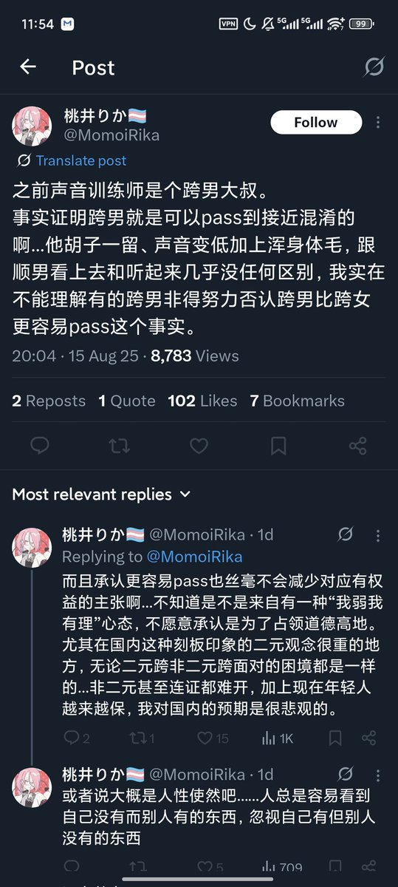

再说了，你以为跨男都爱留胡子吗？可能你认识的跨女都爱追求长胸，都想留长头发，但不代表跨男都喜欢寸头大胡子。你根本没见过几个跨男，就在那以偏概全自己意淫。顺男也有长发男跨男怎么不能留长发了？但事实就是跨男留长发就是很难pass，因为长相和骨架的问题。你说的轻松，一留胡子一变声就完了


怎么还有人觉得跨男因为能变声就比跨女容易pass了，你就知道跨女骨架大了不知道跨男骨架小了？你就知道跨女hrt一两年能长胸不知道跨男被雌激素摧残十几年也会长胸了？瘦一点的胸小确实可以带束胸，那胸大的怎么办？做个手术不就完了，手术费你给出？而且瘦的必然就骨架小，再矮一点，留个胡子就跟你们 https://t.co/FVRMMD68jg